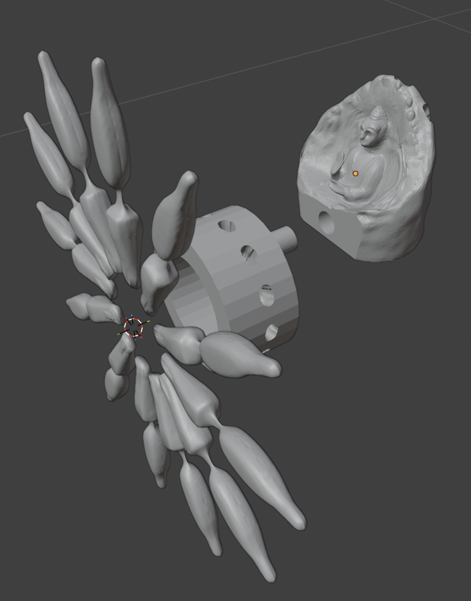

Buddha Clock Concept


This concept features a fully working clock with hour and minute hands. The green buddha acts as an anchor to hold the clock which doesn't need to be mounted on a wall. There are 12 arms to signal the time.